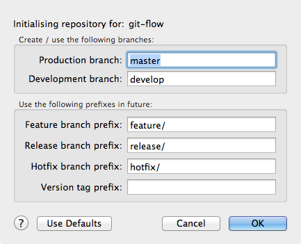

Initialising a repository for Git Flow / Hg Flow
Before you can use Git Flow or Hg Flow on a repository, you need to initialise it. This makes sure that the correct branches exist, and that the prefixes to be used for features, releases and hot fixes are defined.
Initialising a repository is easy - in fact if you click the 'Git Flow' (or 'Hg Flow') toolbar button it's the default action on a repository that hasn't been initialised. You'll see this dialog:

The settings should be self-explanatory, please review the descriptions of the various branches in the introductory section if not.
What exactly initialisation does differs slightly between Git and Mercurial, so please refer to the sections below for full details.
Git Flow initialisation
On initialising, Git Flow will ensure that the production branch (e.g. 'master') and the development branch (e.g. 'develop') already exist. If they don't exist then a warning will appear detailing what needs to be done to proceed. These are local branches right now, and you'll probably want to push them to your remote soon after initialisation, because it's very important that the whole team uses these same branch names.
The prefixes for feature, release and hot fix branches are stored inside the .git/config file (local repository settings) and used in future when you start feature development or begin a release / hotfix. Because this configuration is local, it means that every member of the team must run the Git Flow initialisation process locally before they can use it. It's essential that every team member uses the same settings in the Git Flow initialisation, and for this reason it's highly recommended not to change the defaults in the initialisation dialog, that way it's easy for everyone to be set up the same way.
If different developers used different prefixes for feature/release/hotfix branches that wouldn't be such a big deal, but agreeing on the production and development branches is essential. Of course, you can use different names locally and push to remote branches called something else, but that can get confusing so it not recommended unless you know what you're doing.
Hg Flow initialisation
When initialised, Hg Flow will perform the following actions:
- Create the production branch and the development branch, if they don't already exist
- Commit a file called '.flow' to every open branch, containing the Hg Flow branch configuration
Because these changes are less lightweight than the Git Flow initialisation, SourceTree will ask you confirm that you're happy with this before proceeding from the initialisation panel. While it makes the initialisation a bit more intrusive to your repo, the advantage is that the Hg Flow configuration file is stored in the repository, meaning that once you synchronise these changes with other team members, they automatically get the same configuration (unlike Git Flow where each team member has to initialise the repo locally).
Once you've initialised your repository, you're ready to start using Flow.